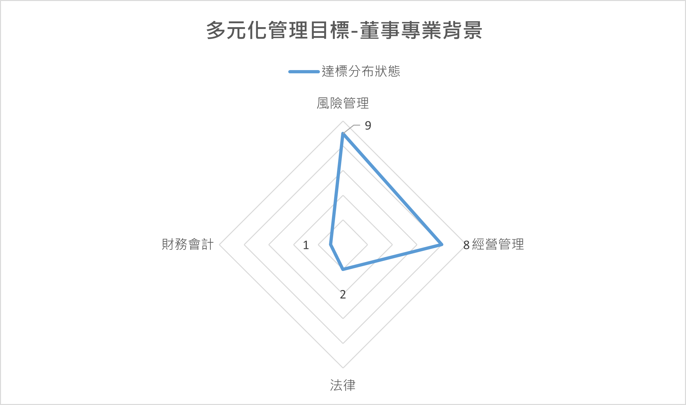

本公司就公司經營發展規模及主要股東持股情形，衡酌實務運作需要，決定七至十三人之適當董事席次。其主要職責為：
本公司現有九位董事，其中包含四位獨立董事。
| 職稱 | 姓名 | 主要學經歷 | 備註 |
| 董事長 | 劉慧瑾 | 美國西北大學化學博士 永豐餘典範投資控股股份有限公司董事長 |
|
| 董事 | 駱秉正 | 美國康乃爾大學強森管理學院財務管理碩士 永豐餘典範投資控股股份有限公司總經理 |
|
| 董事 | 黃鯤雄 | 美國威斯康辛州立大學化學材料科學博士 中華紙漿股份有限公司董事長 |
|
| 董事 | 王金山 | 臺灣大學EMBA會計與管理決策組碩士 臺灣水泥股份有限公司獨立董事 |
|
| 董事 | 黃俊傑 | 國立政治大學科技管理研究所碩士 華誠資本股份有限公司總經理暨合夥人 |
|
| 獨立董事 | 盧希鵬 | 美國威斯康辛大學麥迪森分校工業工程博士 國立臺灣科技大學資管系專任特聘教授 |
審計委員會主席 薪酬委員會主席 |
| 獨立董事 | 黃廸熹 | 美國奧克拉荷馬市大學刑事司法管理研究所碩士 法務部調查局副局長 |
審計委員會委員 薪酬委員會委員 |
| 獨立董事 | 張懿云 | 德國慕尼黑大學法學博士 輔仁大學行政副校長 |
審計委員會委員 薪酬委員會委員 |
| 獨立董事 | 胡均立 | 美國紐約州立大學石溪分校經濟學博士 國立陽明交通大學經營管理研究所專任教授 |
審計委員會委員 薪酬委員會委員 |
本公司於2018年11月13日董事會通過訂定「公司治理守則」，在第三章「董事會之組成與職權」第19條即擬訂有董事成員多元化的方針
3.1本公司董事會成員之提名與遴選係遵照公司章程之規定，採用候選人提名制，遵守「董事選舉辦法」及「公司治理守則」，以確保董事成員之多元性及獨立性。董事間均無證券交易法第26條之3規定第3項及第4項規定具有配偶及二親等以內親屬關係之情形。獨立董事本人、配偶、二親等以內親屬均未擔任本公司、關係企業及與本公司有特定關係公司之董事、監察人或受僱人且未持有公司股份；最近二年亦未曾提供本公司或關係企業商務、法務、財務、會計等服務。
3.2「多元化管理目標」:
| 多元化管理目標 | 2023達成情形 |
| (1)公司經理人兼任董事不逾董事席次三分之一 | 是，目前2位經理人兼任董事。 |
| (2)至少包含一位女性董事 | 是，目前有2位女性董事。 |
| (3)成員專業背景宜涵蓋經營管理、財務會計、法律、風險管理。 | 是，目前董事會成員背景中: 風險管理9位、經營管理專業8位、法律2位、財務會計1位。 |

3.3
本公司董事成員的專業背景包括有產業背景、經營管理背景及會計背景等，衡諸本公司第28屆董事成員名單，
長於領導、營運判斷、經營管理、危機處理、具有產業知識及國際市場觀者有劉慧瑾董事、駱秉正董事、黃鯤雄董事、黃俊傑董事；王金山董事為會計師。
本公司獨立董事成員，包括盧希鵬獨立董事、張懿云獨立董事、胡均立獨立董事均為大學教授，黃廸熹獨立董事有刑事犯罪調查專長。
本公司董事會成員中，具員工身份之董事有2位，獨立董事有4位；獨立董事的任期達6年者有1位，其餘3位均為2021年始被選任為獨立董事；
董事年齡分布情形：70歲以上者有2位、60至70歲者有2位、50至60歲以上者有5位。本公司亦注重董事會組成之性別平等，
本屆董事成員包含2位女性成員（其中1名為獨立董事）。
| 職稱 | 董事長 | 董事 | 董事 | 董事 | 董事 | 獨立董事 | 獨立董事 | 獨立董事 | 獨立董事 | |
| 姓名 | 劉慧瑾 | 駱秉正 | 黃鯤雄 | 王金山 | 黃俊傑 | 盧希鵬 | 黃廸熹 | 張懿云 | 胡均立 | |
| 基本條件 | 性別 | 女 | 男 | 男 | 男 | 男 | 男 | 男 | 女 | 男 |
| 兼任經理人 | 否 | 是 | 是 | 否 | 否 | 否 | 否 | 否 | 否 | |
| 年齡 | 50~60 | 50~60 | >70 | >70 | 50~60 | 50~60 | 60~70 | 60~70 | 50~60 | |
| 專業背景 | 產業 | V | V | V | V | |||||
| 經營管理 | V | V | V | V | V | V | V | V | ||
| 會計 | V | |||||||||
| 專業能力 | 領導 | V | V | V | V | V | V | V | V | V |
| 營運判斷 | V | V | V | V | V | |||||
| 經營管理 | V | V | V | V | V | V | V | V | ||
| 危機處理 | V | V | V | V | V | V | V | |||
| 產業知識 | V | V | V | V | V | V | V | V | V | |
| 國際市場觀 | V | V | V | V | V | V | ||||
| 風險管理 | V | V | V | V | V | V | V | V | V | |
審計委員會：本公司審計委員會由4名獨立董事組成，包括盧希鵬委員、黃廸熹委員、張懿云委員、胡均立委員，其中盧希鵬委員為召集人，旨在監督公司財務報表是否允當表達、簽證會計師之選任及是否具獨立性、公司內部控制是否有效實施、公司是否遵循相關法令及規則、公司對於存在或潛在風險是否進行管控。
薪酬委員會：本公司薪酬委員會成員由董事會決議委任之，其人數為4人，目前均由獨立董事擔任，包括盧希鵬委員、黃廸熹委員、張懿云委員、胡均立委員，其中盧希鵬委員為召集人。其職權為訂定並定期檢討董事及經理人績效評估與薪資報酬之政策、制度、標準與結構；定期評估並訂定董事及經理人之薪資報酬。
永續發展委員會：本公司永續發展委員會成員由董事會決議委任之，其人數為7人，包括劉慧瑾委員、黃鯤雄委員、駱秉正委員、盧希鵬委員、黃廸熹委員、張懿云委員、胡均立委員，其中劉慧瑾委員為召集人，胡均立委員係台灣環境與資源經濟學會的理事長，具備環境永續經濟理論及其政策應用的專長。本公司永續發展委員會之職權為公司永續發展政策之制定、推動及強化；公司永續發展執行情形與成效之檢討與管理；加強與各利害關係人的溝通，及關注其所重視之議題。永續發展委員會下設環境永續組、責任供應鏈組、公司治理組、員工關懷組、社會參與組、資訊安全組、風險管理組，共計7個工作小組，每月均定期召開月會報告工作進度，2022年度已分別於11月9日及12月28日、2023年度分別於8月9日及12月22日，每年召開兩次永續發展委員會會議，向委員會報告各工作小組的工作進度，並聽取各委員的建議。2023年5月12日向董事會報告本公司永續發展工作執行情形。
| 評估週期 | 評估期間 | 評估範圍 | 評估方式 | 評估內容 | 評估結果 |
| 本公司2021度董事會及功能性委員會績效評估係以內部自評方式辦理 | 2021年1月1日至12月31日止 | 包括整體董事會、個別董事成員、審計委員會及薪酬委 員會之績效評估 | 包括董事會內部自評、董事 成員自評、審計委員會及薪酬委員會內部自評等方式以進行績效評估 |
本公司董事會績效評估之衡量項目，含括下列五大面向： 1.對公司營運之瞭解與建議。 2.提升董事會決策品質。 3.董事會組成與結構。 4.董事的選任及持續進修。 5.內部控制。 本公司董事成員績效評估之衡量項目，含括下列六大面向： 1.公司目標與任務之掌握。 2.董事職責認知。 3.對公司營運之瞭解與建議。 4.內部關係經營與溝通。 5.董事之專業及持續進修。 6.內部控制。 本公司審計委員會及薪酬委員會績效評估之衡量項目，含括下列五大面向： 1.對公司營運之瞭解與建議。 2.功能性委員會職責認知。 3.提 升功能性委員會決策品質。 4.功能性委員會組成及成員選任。 5.內部控制。 |
董事會議事單位於2021年12月31日前，將績效評估相關的自評問卷分別提供予各個董事、審計委員會委員及薪酬委員會委員，並於2022年1月15日前回收問卷，
經彙整評估結果，董事會、董事成員、審計委員會及薪酬委員會的自評結果均為 「優」。
本公司於2022年3月15日將績效評估結果提報董事會。 |
| 本公司2022年度董事會及功能性委員會績效評估係委任「台灣投資人關係協會」以外評方式辦理 「台灣投資人關係協會」係代表全體台灣上市櫃公司投資人關係（IR）專業經理人的非營利協會。該協會指派郭宗霖理事長(會計師，學歷: 東吳大學會計學研究所)、簡世雄理事、以及鄭惠宜律師擔任評審委員，均聲明將秉持公正客觀態度且無任何影響獨立性之情事，對本公司董事會（包含功能性委員會）運作情形進行績效評估。 | 2021年11月1日至2022年10月31日止 | 包括整體董事會(包含其下功能性委員會)運作情形之績效評估 | 外評機構要求本公司提供其所指定的文件，並將績效評估相關自評問卷發放各董事填寫及回收，並指派3位評審委員出具獨立性聲明後負責評估，於2022年11月15日以線上訪談方式與本公司董事長、獨立董事、公司治理主管、稽核主管進行訪評。 |
本公司董事會績效評估之衡量項目，涵蓋下列五大構面： 1. 董事會組成及專業發展。 2. 董事會決策品質。 3. 董事會運作效能。 4. 內部控制及風險管理。 5. 董事會參與企業社會責任程度。 本公司功能性委員會績效評估之衡量項目，涵蓋下列五大構面： 1. 對公司營運之參與程度。 2. 功能性委員會職責認知。 3. 提升功能性委員會決策品質。 4. 功能性委員會組成及成員選任。 5.內部控制。 |
外評機構於2022年11月18日出具評估報告，彙整評估結論與建議事項如下: 1、 永續發展委員會每年至少召開二次會議。 2、 發布英文版永續報告書。 3、 制訂董事會成員及重要管理階層之接班規劃。 4、 訂定經董事會通過之風險管理政策與程序。 5、 制訂與營運目標連結之智慧財產管理計畫。 6、 參酌審計品質指標(AQI)評估簽證會計師之獨立性及適任性。 本公司於2023年3月15日將外評機構的評估結果提報董事會。 |
| 本公司2023年度董事會及功能性委員會績效評估係以自評方式辦理 | 2022年11月1日至2023年10月31日止 | 包括整體董事會、個別董事成員、審計委員會、薪酬委員會及永續發展委員會之績效評估 | 包括董事會內部自評、董事成員自評、審計委員會、薪酬委員會及永續發展委員會內部自評等方式以進行績效評估 |
本公司董事會績效評估之衡量項目，含括下列五大面向： 1.對公司營運之瞭解與建議。 2.提升董事會決策品質。 3.董事會組成與結構。 4.董事的選任及持續進修。 5.內部控制。 本公司董事成員績效評估之衡量項目，含括下列六大面向： 1.公司目標與任務之掌握。 2.董事職責認知。 3.對公司營運之瞭解與建議。 4.內部關係經營與溝通。 5.董事之專業及持續進修。 6.內部控制。 本公司審計委員會及薪酬委員會績效評估之衡量項目，含括下列五大面向： 1.對公司營運之瞭解與建議。 2.功能性委員會職責認知。 3.提升功能性委員會決策品質。 4.功能性委員會組成及成員選任。 5.內部控制。 |
董事會議事單位於2023年11月間，將績效評估相關的自評問卷分別提供予各個董事、審計委員會委員、薪酬委員會委員及永續發展委員會，
並於2023年12月前回收問卷，經彙整評估結果，董事會、董事成員、審計委員會、薪酬委員會及永續發展委員會的自評結果均為「優」。 2022年外評結論與建議事項，6項均已全數完成改善。 本公司於2024年3月14日將績效評估結果提報董事會。 |
前述績效評估結果於每年3月召開之董事會報告，以做為檢討、改進的參考。
本公司於2019年5月14日的董事會決議通過由法務部詹舜翔協理擔任公司治理主管，以保障股東權益並強化董事會職能。詹舜翔協理已具備公開發行公司從事法務之主管職務經驗達三年以上。公司治理主管負責公司治理相關業務，包括：依法辦理董事會及股東會之會議相關事宜；製作董事會及股東會議事錄；協助董事就任及持續進修；提供董事、獨立董事執行業務所需之資料；協助公司遵循董事會及股東會相關法令。本公司於2019年5月14日的董事會決議通過由法務部詹舜翔協理擔任公司治理主管，以保障股東權益並強化董事會職能。詹舜翔協理已具備公開發行公司從事法務之主管職務經驗達三年以上。公司治理主管負責公司治理相關業務，包括：依法辦理董事會及股東會之會議相關事宜；製作董事會及股東會議事錄；協助董事就任及持續進修；提供董事、獨立董事執行業務所需之資料；協助公司遵循董事會及股東會相關法令。
董事會主任秘書於2023年度業務執行情形如下：
1. 2023年度召開1次股東常會，製作股東會議事錄。
2. 2023年度召開共計4次董事會、臨時董事會，製作董事會議事錄。
3. 2023年度召開共計4次審計委員會，製作審計委員會議事錄。
4. 分別於2023年1月份及7月份發函向本公司各董事確認其兼任職務的資訊，以確保各董事兼任職務資訊之完整性。
5. 配合證交所的來函，不定期發函予本公司各董事及其他內部人，提醒有關公司內部人股權轉讓申報須注意的問題。
6. 定期向公司各部門宣導申報重大訊息的程序及規定。
7. 配合人資部門邀請外部講師辦理本公司及子公司董監事研習課程。
8. 提供本公司董事有關外部訓練機構舉辦董監事研習課程之資訊，並協助董事辦理報名、繳費的手續。
本公司之公司治理主管於2023年度參加「ESG風潮下公司治理的新面貌」、「防範內線交易宣導會」、「上市櫃公司永續發展行動方案宣導會」、「企業成長策略與外部創新」、「淨零排放趨勢及紙產業的因應策略；碳權經營與淨零助力」、「AI產業的台灣機會；生成式AI加速數位轉型與智慧製造」等共計18小時的課程，持續進修加強本職學能。
本公司董事由股東會採候選人提名制度，就候選人名單中選任，進而組成董事會，有鑒於公司治理3.0-永續發展藍圖為強化上市櫃公司獨立董事之獨立性， 推動上市櫃公司獨立董事半數以上連續任期不得逾3屆，董事及獨立董事的人選需要世代更迭，本公司每屆董事會改選時，為秉持前後屆董事會運作的持續性與安定性， 均考量董事會成員更換之比例不宜過高，使前一屆的董事之經營管理經驗可以傳承至次一屆的董事。 本公司對於董事及重要管理階層之進修，考量各董事及重要管理階層在其已具備的專業能力以外之範圍， 定期提供各種涵蓋財務、商務、法務、會計、ESG或內部控制制度等與公司治理主題相關課程的資訊給各個董事(含兼任董事職務之總經理)， 每人每年至少安排六小時以上之進修課程，以確保董事會成員及重要管理階層具備優良之公司治理能力。此外， 本公司除於集團之中、高階管理人才中養成可能之董事及重要管理階層接班人，規劃高階管理階層之策略性人才發展培育外， 亦同步尋訪具有商務、法務、財務、會計或公司業務背景並得擔任董事、獨立董事之專業人選，作為日後之接班規劃參考。